Work with Suggested Words¶
Alation Cloud Service Applies to Alation Cloud Service instances of Alation
Customer Managed Applies to customer-managed instances of Alation
The Article Groups > Suggested Words tab displays candidate words for your article groups suggested by Lexicon.
The Suggested Words table has the following information:
Word Actual word suggested by Lexicon after analyzing the database names of schemas, tables, and columns.
Abbreviations List of all abbreviations that Lexicon has matched to the specific suggested word. An abbreviation is a string found in the names of data objects, which is extended by Lexicon into a full comprehensive word.
Related Objects Total number of Related Objects (schemas, tables, or columns).
Popularity Normalized value of the sum of popularities of all the data objects which Lexicon considers to be related to the suggested word. Note that suggested words are pre-ordered by popularity by default.
Actions Reject or Add.
You can filter the table using the natural language filter field on top.
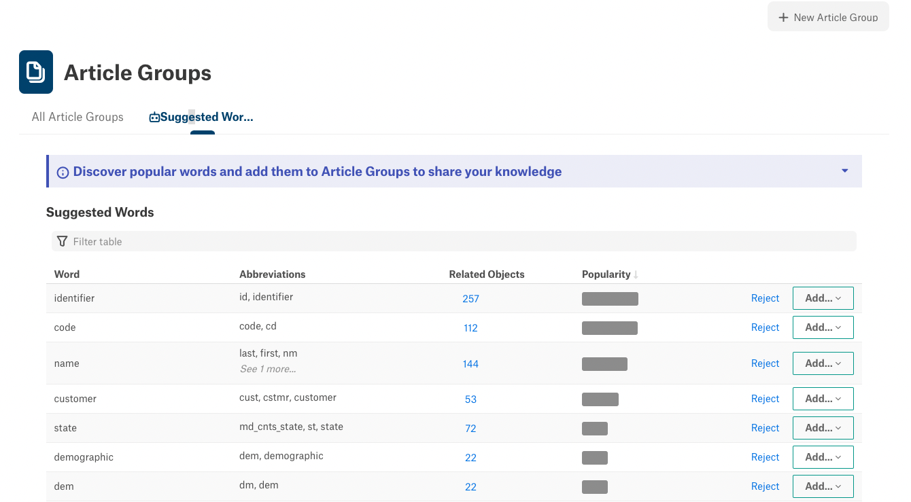Add Suggested Words to an Article Group or an Existing Article¶
You can add a suggested word to an existing article or add it to an existing article group in a new article. This will add the Related Objects list in this word to the Body of the article (existing or new).
Note
You may view the ability to add suggested words to articles as a way to bulk-link data objects relevant to the information in the articles.
Adding a suggested word to an article group creates a new article for that word and attaches it to the article group you have selected.
Articles created or modified by adding a suggested word will always have a section titled Related Data Objects. On the respective catalog pages of these data objects, the article having the Related Object section will be mentioned in the Relevant Articles field.
Note that as soon as the word is added to an article, it disappears from the suggested words list. However, if the article created for this word is deleted, the word will reappear.
Removing the related objects section from the article also returns the word to the suggested words list.
Add a Suggested Word to an Article Group¶
To add a suggested word to an article group:
On the Suggested Word tab, find the word you want to add. For this word, click Add then click As New Article:
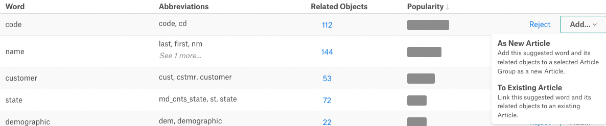
In the list of article groups that opens, find a specific article group you want to add the word to. You can filter the list using the filter field.
In the list, click the article group to which you want to add the word. This action opens a new article page based on the template of this article group. The title of the article is pre-populated with the suggested word. The new article also includes a Related Data Objects field that lists all the data objects (schemas, tables, and columns), which have names relevant to the word:
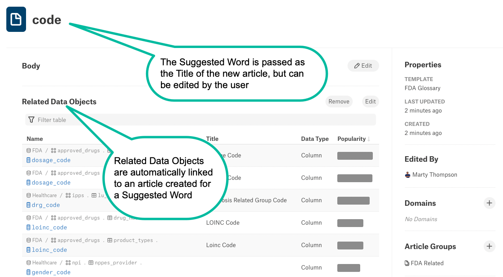Note
If an article group is associated with multiple templates, you will be able to select which template to apply to the new article created for the suggested word.
Also note that suggested words can be added only to article groups that already have at least one template associated with them. It is not possible to add a suggested word to an empty article group.
Add a Suggested Word to an Existing Article¶
To add a suggested word to an existing article,
For this word, click Add then click To Existing Article. This will open the list of articles existing in your catalog. To find a specific article, filter the list using the filter field.
Important
Articles can be linked to only a single suggested word: you cannot add multiple suggested words to the same article. One article can only hold one Related Objects section that points to one suggested word.
Click the article to which you want to add the word:
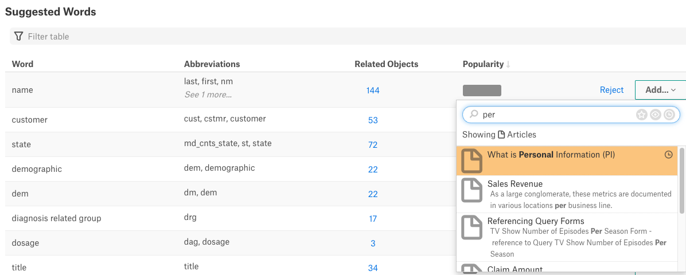
The name of the article will appear next to the word in the Suggested Words table. This allows you to instantly undo the addition, if necessary. To un-select the article, click the cross next to the article title:
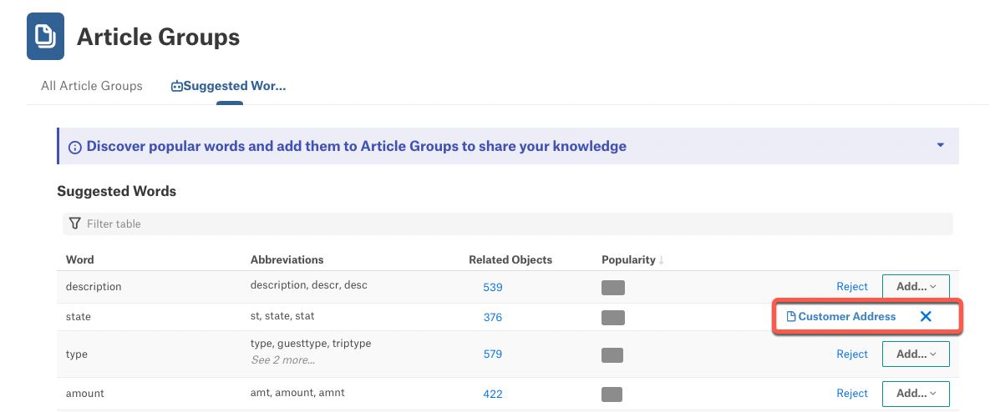
When you leave or reload the Suggested Words page, the addition will be confirmed, and the Related Data Objects field that lists all the relevant data objects (schemas, tables, and columns) will be added to the selected article.
Reject Suggested Words¶
Rejecting a word removes it from the list of suggested words. Rejected words disappear when the user navigates away from the Suggested Words tab or reloads the page.
Words can only be rejected one by one.
To reject a suggested word,
Click Reject for the word:
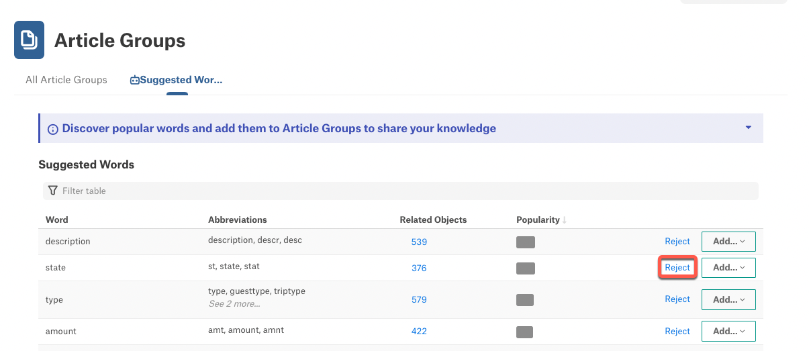The action name will change to Undo allowing you to instantly cancel the action. However, if you leave or reload the page, the rejected word will disappear from the Suggested Words list. It will NOT re-appear when the Lexicon job runs the next time.
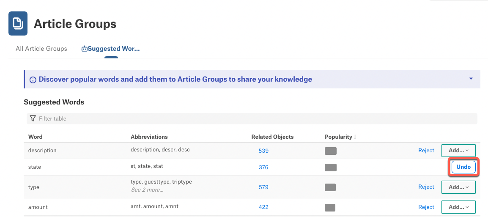Edit Abbreviations List¶
You can manually revise the list of abbreviations that Lexicon included in a group by adding other abbreviations or removing some of them. This will revise the list of relevant objects linked to the word.
To edit the list of abbreviations,
On the Suggested Words tab, hover over the group of abbreviations you want to edit. This will reveal the 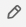 icon to the right:
Click the edit icon to open the editor:
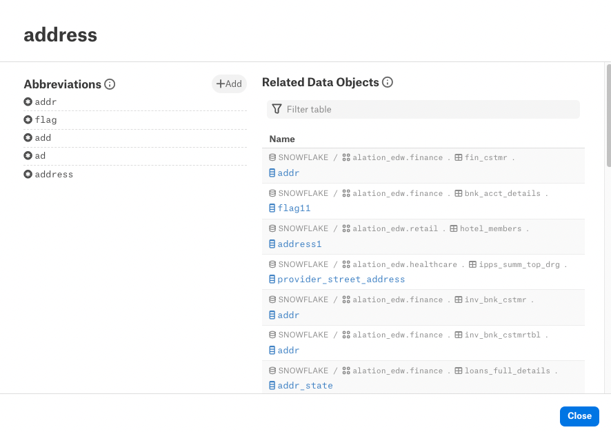
To add an abbreviation, click the Add button:
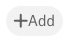Click the add icon to open the quick filter. Find the abbreviation you want to add and click it to add to the list:
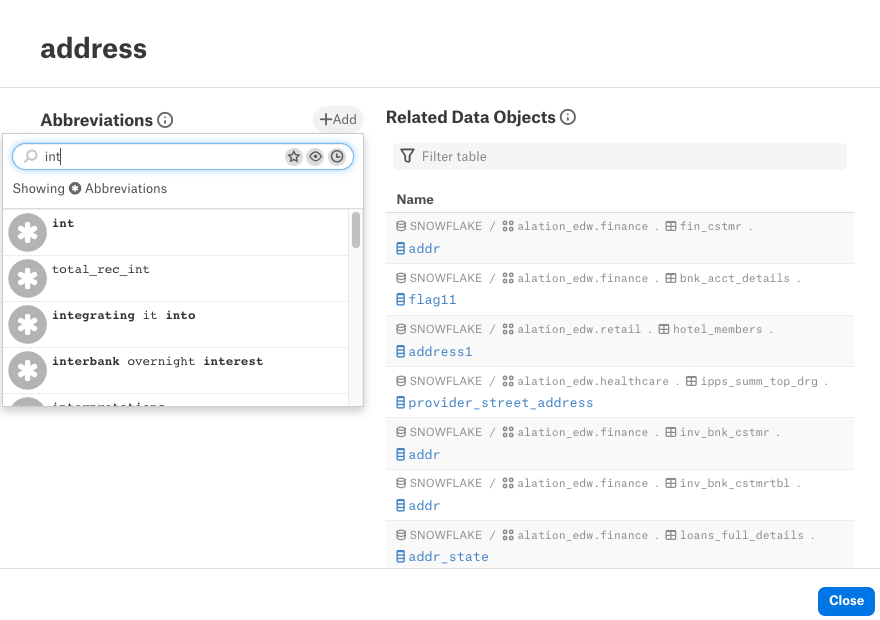
To remove an abbreviation, hover over the abbreviation you want to remove. This will reveal the icon on the right.
Click the delete icon to remove the abbreviation.
The list of Related Data Objects on the right of the editor does NOT immediately update. Click Close at the bottom of the dialog to return to Suggested Words.
Note
Updating the list of abbreviations after a change may take some time and will not immediately be reflected in the list of Related Objects or Suggested Words. After the change is completed by the system, both the list of abbreviations and related objects will be updated. You can refresh the page to see the updated lists.